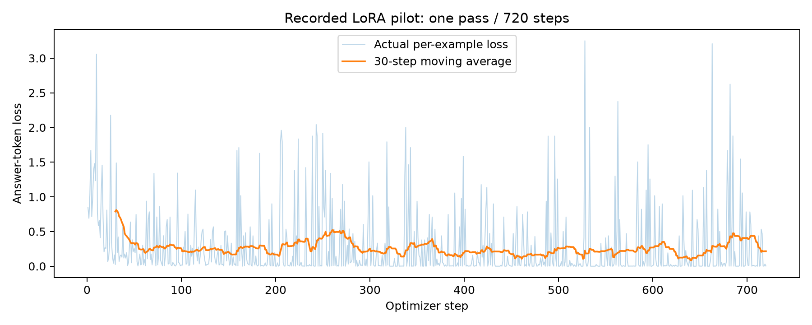

Rendered saved records. Not a historical training-running screenshot.

Saved record: raw/training_result.json
{
"purpose": "One-pass pilot; development comparison only, not held-out test performance",
"model": "AdaptLLM/remote-sensing-Qwen2-VL-2B-Instruct",
"revision": "7f5dd71bf0f40c282193d50160e848a387a08ffe",
"steps": 720,
"baseline_dev": {
"correct": 23,
"total": 60,
"invalid_format": 20,
"per_category": {
"rural_urban": {
"correct": 0,
"total": 20
},
"presence": {
"correct": 10,
"total": 20
},
"comp": {
"correct": 13,
"total": 20
}
}
},
"adapted_dev": {
"correct": 47,
"total": 60,
"invalid_format": 0,
"per_category": {
"rural_urban": {
"correct": 15,
"total": 20
},
"presence": {
"correct": 15,
"total": 20
},
"comp": {
"correct": 17,
"total": 20
}
}
},
"trainable_parameters": 544768,
"seconds": 190.024222655,
"peak_allocated_GiB": 4.454071998596191,
"train_manifest": "fe5b5e985d3b46fe70a748638f947ec4f3fa636958017d840e092d4c3b89cf04",
"visual_tokens": "64-128",
"rank": 4,
"lr": 0.0001,
"batch_size": 1,
"gradient_checkpointing": true,
"answer_only_loss": true,
"adapter_reload_passed": true
}Saved record: raw/adapter_config.json
{
"alpha_pattern": {},
"auto_mapping": null,
"base_model_name_or_path": "/root/.cache/huggingface/hub/models--AdaptLLM--remote-sensing-Qwen2-VL-2B-Instruct/snapshots/7f5dd71bf0f40c282193d50160e848a387a08ffe",
"bias": "none",
"corda_config": null,
"eva_config": null,
"exclude_modules": null,
"fan_in_fan_out": false,
"inference_mode": true,
"init_lora_weights": true,
"layer_replication": null,
"layers_pattern": null,
"layers_to_transform": null,
"loftq_config": {},
"lora_alpha": 8,
"lora_bias": false,
"lora_dropout": 0.05,
"megatron_config": null,
"megatron_core": "megatron.core",
"modules_to_save": null,
"peft_type": "LORA",
"r": 4,
"rank_pattern": {},
"revision": null,
"target_modules": [
"v_proj",
"q_proj"
],
"task_type": "CAUSAL_LM",
"trainable_token_indices": null,
"use_dora": false,
"use_rslora": false
}Saved record: raw/independent-ndvi-check.json
{
"method": "tifffile decoder; scalar float64 Python arithmetic; TIFF pixel-scale/CRS tags; no application analytical imports",
"source_sha256": "55f3ca7b578e045594f8d54419b590c3ffeb99247ec5f74d7b1355d5bc4ec0f8",
"valid_pixels": 262144,
"selected_pixels": 38761,
"percent": 14.786148071289062,
"area_hectares": 387.61,
"footprint_hectares": 2621.44,
"mask_disagreement_pixels": 0,
"max_ndvi_absolute_difference": 1.0469680333802245e-07
}Saved record: metrics/dehradun_metadata.json
{
"calibration_version": "c1-header-verified-v2",
"crs": "EPSG:32643",
"width": 512,
"height": 512,
"transform": [
10.0,
0.0,
788360.0,
0.0,
-10.0,
3359030.0
],
"bounds": [
788360.0,
3353910.0,
793480.0,
3359030.0
],
"bounds_wgs84": [
77.99766300376905,
30.281402875774386,
78.05225589782314,
30.328772451280432
],
"resolution": [
10.0,
10.0
],
"bands": {
"red": 1,
"green": 2,
"blue": 3,
"nir": 4,
"scl": 5
},
"band_descriptions": [
"red",
"green",
"blue",
"nir",
"scl"
],
"nodata": "nan",
"scales": [
1.0,
1.0,
1.0,
1.0,
1.0
],
"offsets": [
0.0,
0.0,
0.0,
0.0,
0.0
],
"acquired": "2021-11-25T05:40:34.501000Z",
"source_item": "S2A_T43RGP_20211125T053958_L2A",
"attribution": "Contains modified Copernicus Sentinel data (2021), accessed through Element 84 Earth Search / AWS.",
"ndvi_supported": true,
"quality_mask_available": true,
"preview_processing": "Per-channel 2nd\u201398th percentile RGB display stretch; analytical values are preserved."
}Saved record: metrics/ndvi_timing_summary.json
{
"server_reported_seconds": {
"mean": 0.057099999999999984,
"median": 0.049,
"p95": 0.0665000000000001,
"min": 0.043,
"max": 0.209
},
"client_submit_poll_seconds": {
"mean": 0.06887162459952378,
"median": 0.059296752500813454,
"p95": 0.07767822119876666,
"min": 0.055463905999204144,
"max": 0.2239250440034084
}
}